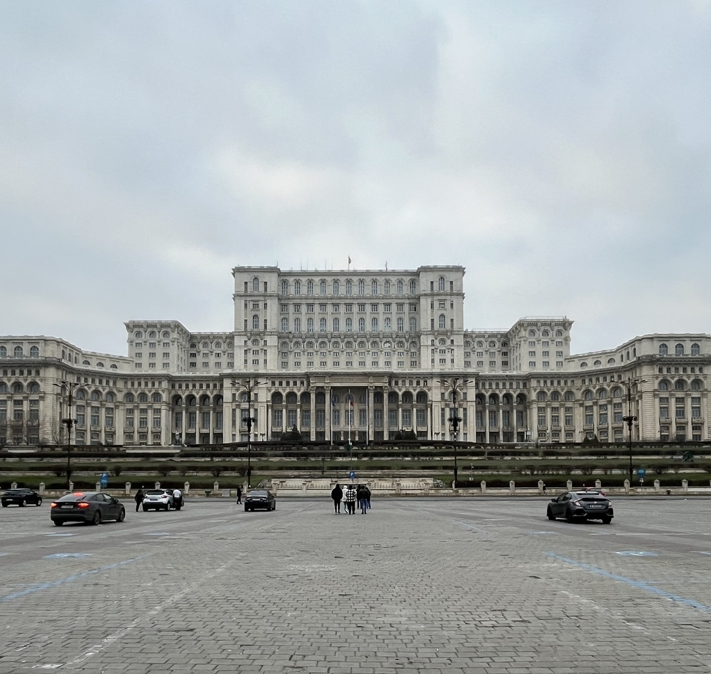
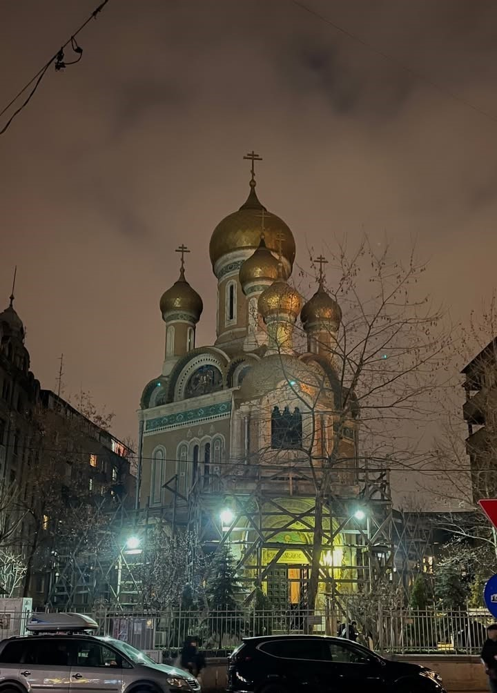
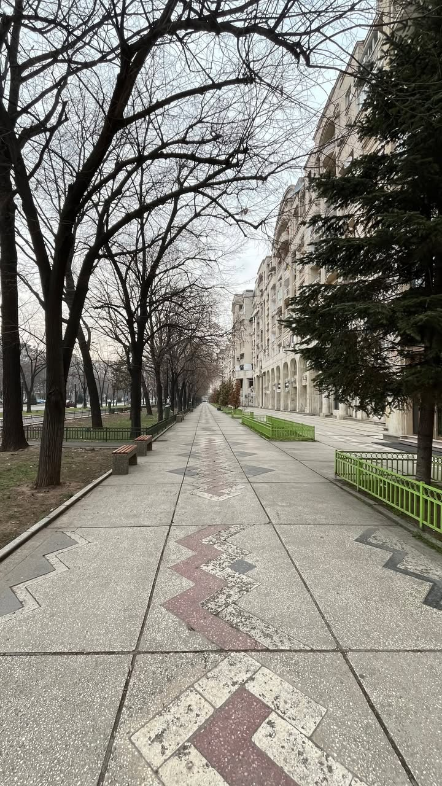
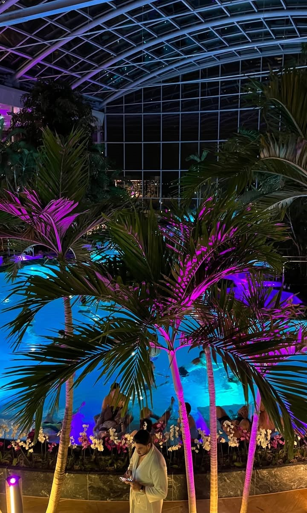
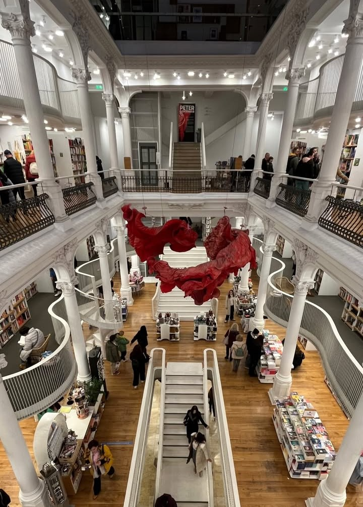

Romania: La capitale Bucarest
Un viaggio di 4 giorni attraverso la capitale e le terme di Bucarest
Panoramica dell'Itinerario
Questo itinerario di 4 giorni ti porterà alla scoperta di Bucarest, dalla vivace vita del centro storico al maestoso Parlamento. Potrai visitare librerie e immergerti nella cultura locale tra piazze e scorci cittadini. Non mancheranno momenti di relax alle celebri terme di Bucarest, esperienze gastronomiche nei ristoranti locali e comodi spostamenti per vivere la città in ogni sua sfaccettatura.
Itinerario Giorno per Giorno
Arrivo a Bucarest

Attività:
- Mattina/Pomeriggio: Arrivo a Bucarest, la capitale della Romania. Dopo l'atterraggio all'aeroporto puoi raggiungere il centro città con taxi, autobus oppure servizi di ride sharing molto diffusi e generalmente economici. Una volta arrivato nel centro storico puoi effettuare il check-in nel tuo hotel o appartamento, preferibilmente nelle zone vicino a Universitate o alla via Lipscani, che è il cuore della città vecchia. Bucarest è una città piuttosto grande ma il centro storico si gira facilmente a piedi e rappresenta il punto migliore da cui iniziare l'esplorazione della città.
- Sera: Dopo esserti sistemato puoi fare una prima passeggiata nel centro storico di Bucarest, una zona piena di ristoranti, locali e edifici storici. Le strade acciottolate e le piazze illuminate la sera rendono l'atmosfera molto vivace. Qui puoi fermarti in uno dei ristoranti tradizionali per provare alcuni piatti tipici della cucina rumena come i sarmale, involtini di cavolo ripieni di carne e riso, oppure i mici, piccole salsicce alla griglia molto popolari nel paese. I prezzi dei ristoranti sono generalmente più bassi rispetto a molte capitali dell'Europa occidentale, quindi è facile trovare locali con buon rapporto qualità prezzo.
Tour dei monumenti di Bucarest

Attività:
- Mattina: Inizia la giornata con una passeggiata nel centro storico di Bucarest, una delle zone più caratteristiche della città. Qui potrai vedere piazze storiche, edifici colorati e numerosi bar e ristoranti. Durante la visita puoi fermarti anche alla Biblioteca Nazionale della Romania, un edificio moderno affacciato sul fiume Dâmbovița che ospita collezioni culturali e spazi dedicati alla lettura e agli eventi.
- Pomeriggio: Nel pomeriggio puoi visitare uno dei monumenti più famosi della città, il Palazzo del Parlamento. Questo edificio è uno dei più grandi palazzi amministrativi del mondo e rappresenta uno dei simboli più importanti di Bucarest. È possibile partecipare a visite guidate per vedere alcune sale interne del palazzo e conoscere la storia della sua costruzione. Dopo la visita puoi fare una pausa al Café Van Gogh nel centro storico e continuare la passeggiata lungo la famosa Via degli Ombrelli, una strada decorata con centinaia di ombrelli colorati sospesi sopra la via. Successivamente puoi rilassarti con una passeggiata nel Parco Cismigiu, uno dei parchi più antichi e piacevoli della città.
- Sera: In serata puoi tornare nel centro storico per cenare in uno dei ristoranti locali e goderti l'atmosfera vivace della città. La zona è molto frequentata soprattutto la sera, con numerosi locali, musica e terrazze all'aperto dove bere qualcosa dopo cena.
Relax alle terme

Attività:
- Mattina/Pomeriggio: Dedica la giornata al relax visitando le famose terme di Bucarest, conosciute come Therme București. Questo grande complesso termale si trova poco fuori dalla città ed è uno dei centri benessere più grandi d'Europa. All'interno troverai piscine termali, palme tropicali, saune, scivoli d'acqua e diverse aree dedicate al relax. Le terme sono divise in tre zone principali: Galaxy, adatta anche alle famiglie con scivoli e attrazioni acquatiche; The Palm, una grande area tropicale con piscine termali e lettini per rilassarsi; ed Elysium, la zona più tranquilla dedicata alle saune e ai trattamenti benessere.
- Sera: Dopo la giornata alle terme puoi rientrare in città e fare una passeggiata tranquilla nel centro storico oppure cenare in uno dei ristoranti tipici della città. Le terme distano circa 30 minuti dal centro e sono facilmente raggiungibili con taxi o servizi di trasporto privato.
Rientro

Attività:
- Mattina: Nell'ultimo giorno puoi fare un'ultima passeggiata nel centro di Bucarest e visitare alcune delle attrazioni che non hai ancora visto. Tra queste c'è la famosa libreria Cărturești Carusel, considerata una delle librerie più belle d'Europa grazie alla sua architettura elegante con balconate bianche e grandi spazi luminosi. È anche un luogo perfetto per scattare qualche foto ricordo del viaggio.
- Pomeriggio: In base all'orario del volo puoi dirigerti verso l'aeroporto per il rientro. Bucarest è una città ricca di contrasti, dove edifici storici convivono con architetture moderne e grandi viali. In pochi giorni è possibile scoprire molte delle sue attrazioni principali, gustare la cucina locale e vivere l'atmosfera vivace della capitale rumena prima di tornare a casa.
Riepilogo Costi Stimati
*Costi esclusi: voli, assicurazione viaggio, spese personali
Consigli Pratici
Quando Andare
Aprile-Giugno, Settembre-Ottobre sono ideali per clima mite. Evita Gennaio - Febbraio: troppo freddo.
Come Muoversi
Bucarest si visita facilmente a piedi nel centro storico. I mezzi pubblici, come autobus e tram, costano circa 1€ a corsa, e con pochi euro puoi raggiungere praticamente qualsiasi zona della città. Anche Bolt è molto conveniente e ti porta rapidamente ovunque tu voglia andare.
Dove Alloggiare
Scegli un hotel o appartamento vicino al centro di Bucarest (zona Universitate o via Lipscani) per avere le principali attrazioni a portata di mano. In centro i prezzi sono molto convenienti, quindi puoi trovare soluzioni economiche senza rinunciare alla posizione.
Cosa Assaggiare
Prova i piatti tipici rumeni come sarmale (involtini di carne e riso), mici (salsicce alla griglia), ciorbă (zuppa acida), papanasi (dolci fritti ripieni di formaggio) e yogurt locale.
Scopri le Terme di Bucarest
Sono divise in tre zone:
Galaxy: area adatta a famiglie e bambini, con scivoli d'acqua.
The Palm: zona tropicale con piscine termali.
Elysium: area con saune, piscine e trattamenti spa.
All'ingresso, riceverai un braccialetto elettronico che funge da chiave per l'armadietto e da metodo di pagamento all'interno della struttura. Potrai utilizzarlo per acquistare cibo, bevande e servizi extra, pagando tutto insieme al termine della visita.